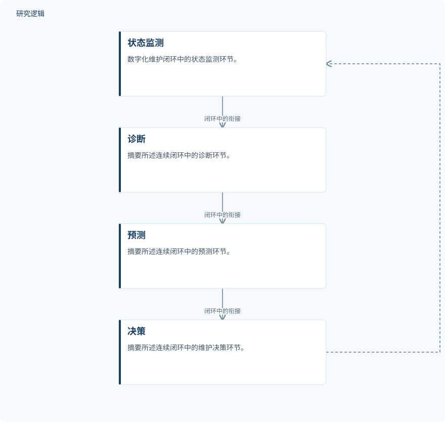

摘要解读
工业设施数字化与维护类型分类：一项综述
Digitalization in Industrial Facilities and the Classification of Maintenance Types: A Review
解读更新 2026-10-26 12:53 · 依据公开摘要整理，未核验全文细节
工业维护数字化的价值，不只是更早发现故障，还在于如何把监测、预测与维护决策连接起来。这篇综述尝试统一维护类型的分类，并讨论数字孪生、机器学习与剩余使用寿命估计如何重塑维护管理。
文章目录
从“何时维修”走向维护策略的协同
工业设施的维护正在从故障后的纠正性处理、按时间安排的维护，转向数据驱动、基于状态和预测的策略。本文关注的不是某个预测模型，而是这些维护类型应如何放在一致框架下理解，以及数字技术如何改变它们之间的关系。
摘要列出的数字化支撑包括信息物理系统、工业物联网、数字孪生、机器学习和剩余使用寿命估计。研究问题因此同时涉及维护分类与技术作用，不能简单概括为用人工智能替代传统维修。
用叙述性综述梳理维护类型与数字技术
作者采用叙述性、非系统性综述，整理同行评议期刊论文，并补充以可靠性为中心的维护领域的原始文献。研究沿“被动—主动”轴分类和比较纠正性、计划性／周期性、基于状态、预测性、以可靠性为中心、基于风险及机会性维护。
综述还讨论大语言模型与生成式人工智能、联邦学习与边缘学习、可解释人工智能、数字孪生互操作标准，以及以人为中心的维护视角。这些内容属于技术进展与管理意义的梳理，摘要没有将其描述为同一套系统中的实测模块。
依据摘要整理的数字维护闭环


概括摘要明确提出的状态监测、诊断、预测与决策关系；这是摘要示意图，不是论文原图，也不表示已完成现场验证。
下载 SVG图示关系说明
实线表示相邻阶段的信息流，虚线表示跨阶段联系或反馈。
状态监测 → 诊断：闭环中的衔接；诊断 → 预测：闭环中的衔接；预测 → 决策：闭环中的衔接；决策 → 状态监测：形成连续闭环
维护类型被纳入连续决策闭环
作者的核心判断是：数字化使不同维护类型不再只是互斥选项，而成为一体化资产管理连续体中的组成部分。它们被重新置于“状态监测—诊断—预测—决策”的连续闭环中；工业数字化与可信人工智能研究也为这一连续体增加了以人为中心的维度。
作者还提出一个概念性数字维护框架，将数字孪生、基于剩余使用寿命的维护间隔计算、预期利润损失指标（ePLI）与提醒／报警决策层耦合。摘要称，ePLI通过预期损失表达式、基于阈值的提醒／报警规则及示例应用场景加以形式化。这是框架与规则层面的贡献，不能直接理解为已验证的收益提升。
概念框架不等于现场效果已经证实
本次解读仅依据所提供的摘要，且其末句存在截断，不补写缺失结论。摘要不足以判断文献检索与筛选的完整性，也无法核实示例场景涉及的设备样本、数据规模、比较基线、阈值设定及现场验证范围。这些是当前资料无法回答的问题，并不意味着论文没有开展相关工作。
阅读启发：关注预测如何转化为维护决策
阅读启发：对智能运维研究，更值得进一步阅读的问题是，剩余使用寿命如何进入维护间隔计算，预期损失又如何影响提醒与报警；同时可关注作者如何界定不同维护类型在闭环中的关系，以及可信人工智能和人的参与如何落实到决策层。当前摘要支持提出这些问题，但不足以给出实施效果判断。
以上为本站阅读启发与建议，不是论文已验证的结论。